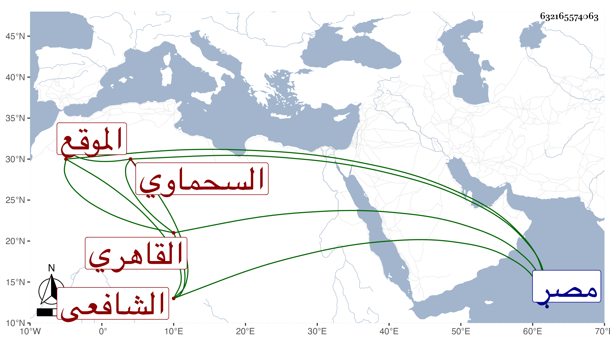

0902Sakhawi.DawLamic.ITO20230111-ara1.EIS1600.632165574063
Biography ID: 632165574063
108
محمد بن محمد الشمس بن البدر السحماوي القاهري الشافعي الموقع . مات في ليلة السبت منتصف ذي الحجة سنة ثمان وستين عن اثنتين وثمانين سنة وكان شيخا ساكنا جامدا كثير التواضع والأدب والحشمة مع فضيلة ما باشر التوقيع أزيد من خمسين سنة بل خدم أيضا عند جماعة من أعيان أمراء مصر أولهم يشبك الإينالي في سنة نيف وعشرين وآخرهم الظاهر خشقدم إلى أن تسلطن وكان يتوقع تقديمه له فما قدر وعمل له كتابا في مواكب الترك وشبهها . وقد كثر اجتماعي معه وفهمت منه اعتناءه بالحوادث ولكن لم أر شيئا من ذلك رحمه الله .
